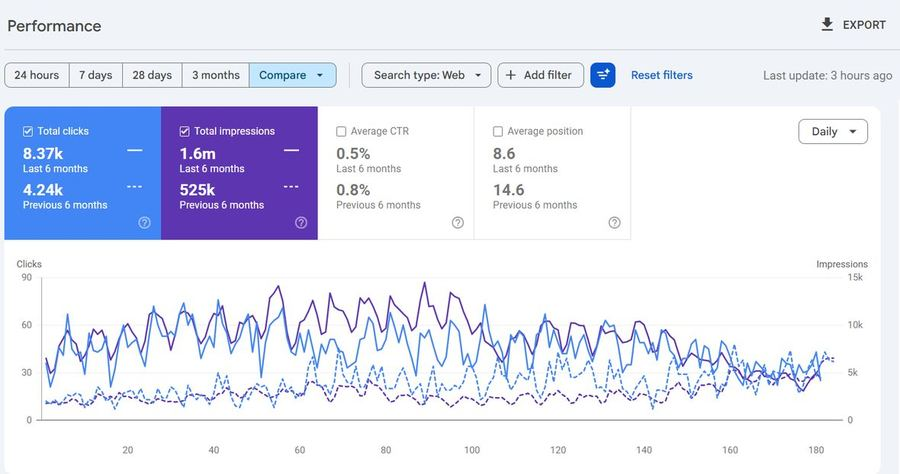
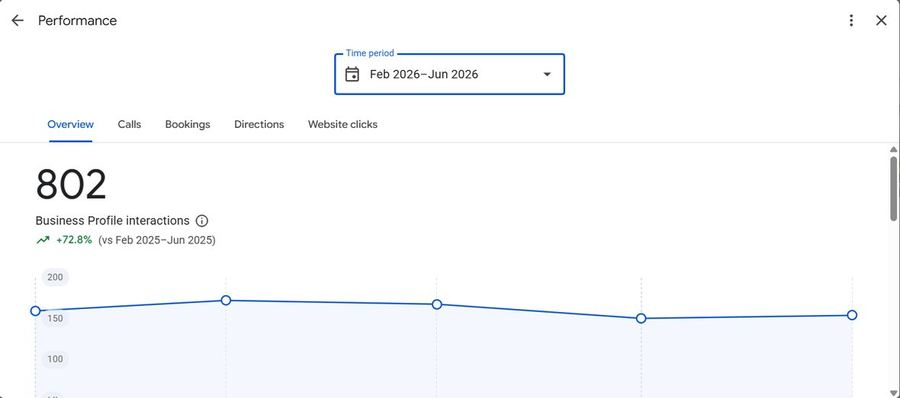
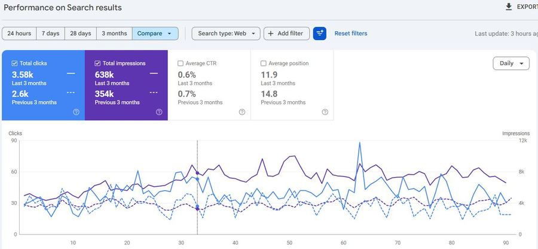
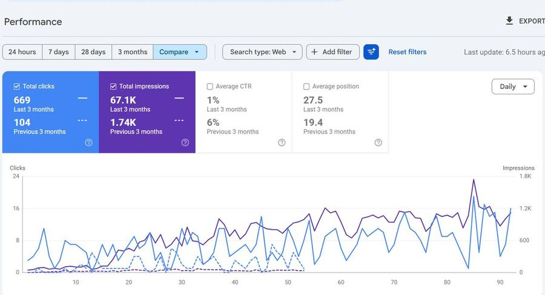
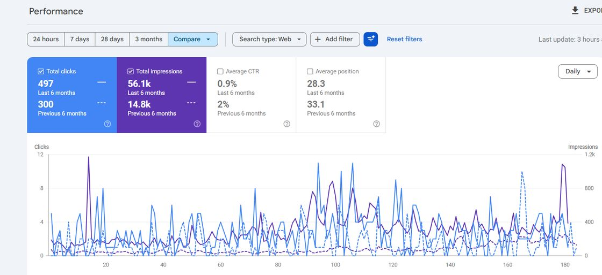
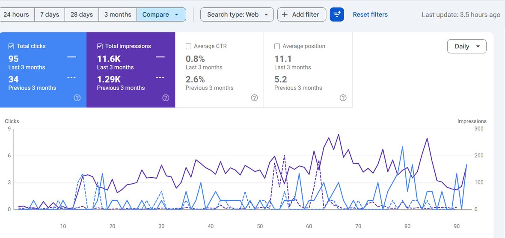
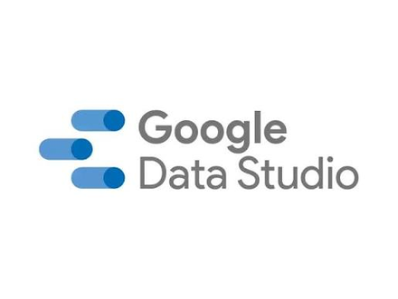
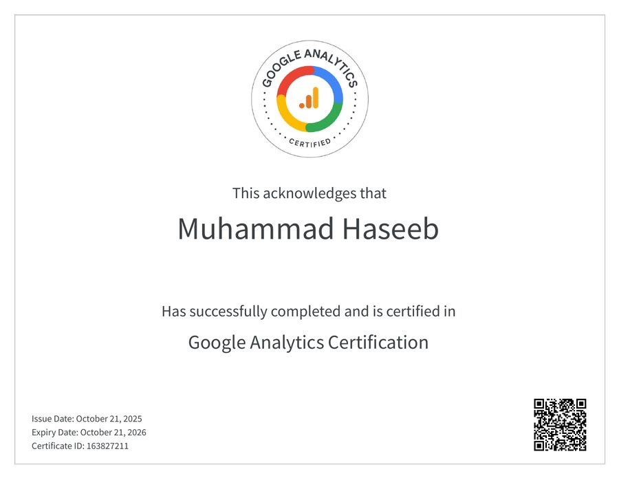

Your next customers are searching right now. I make sure they find you.
I find the single constraint capping your organic growth and fix it first. Real Search Console results, not a retainer and a to-do list.
 HaseebI run every diagnostic personally. No card, no obligation.
HaseebI run every diagnostic personally. No card, no obligation.
Who is Muhammad Haseeb Sheikh?
Muhammad Haseeb Sheikh is an Organic Growth Strategist specializing in healthcare SEO and local search. He finds the single constraint capping a business's organic growth and fixes it in the order that compounds. Documented results from prior engagements include growing one clinic from 7,650 to 48,200 organic clicks over six months and lifting its average Google position from 19 to 6.5. He is based in Faisalabad, Pakistan, has worked in SEO since 2022, and works remotely with clinics, local businesses and agencies. His published results are in the healthcare SEO case study, and he offers a free organic growth diagnostic.
A clinic that was invisible. Six months later, page one.
A multi-location specialty clinic sat at the bottom of page two for the searches its patients actually type. I rebuilt the site around how people search, strengthened its local trust signals, and cleared the path to booking. Here is what happened, screenshots included.


Six dashboards. Including the numbers that went the wrong way.
Every figure below is read off the screenshot beside it, not retyped from memory. Where a metric declined I have left it in and said why, because a portfolio that only shows rising lines is telling you it has been edited.

- Clicks4.24k→8.37k
- Impressions525k→1.6m
- Average position14.6→8.6
- CTR0.8%→0.5%
Clicks roughly doubled while impressions tripled, so the click-through rate dips even as the practice reaches far more people. Average position moved from mid page two (14.6) onto page one (8.6). Most of the gain came in the first half of the window; the last two months flattened.

- Profile interactions~464→802
- Year-on-year change+72.8%
Calls, bookings, direction requests and website clicks straight off the map pack. The earlier figure is worked out from the +72.8% change on the dashboard. For a local practice this is closer to revenue than any ranking number.

- Clicks2.6k→3.58k
- Impressions354k→638k
- Average position14.8→11.9
- CTR0.7%→0.6%
A steadier curve than the others: clicks up 38% and impressions up 80% against the previous quarter, from remapping existing pages to real patient intent rather than publishing new ones. That suits a membership model with finite local demand.

- Clicks104→669
- Impressions1.74k→67.1k
- Average position19.4→27.5
- CTR6%→1%
Read this one carefully, because two numbers got worse. Clicks grew more than sixfold (104 to 669) and impressions nearly fortyfold, but as the site went from ranking for a handful of queries to thousands, the new ones sit lower, so average position and CTR both slipped. This is early-stage reach, not a finished job.

- Clicks300→497
- Impressions14.8k→56.1k
- Average position33.1→28.3
- CTR2%→0.9%
The earliest-stage healthcare build shown. Impressions grew almost fourfold and clicks by two-thirds. CTR fell because impressions grew faster than clicks while most new pages still rank on page three. The foundation is set; the growth phase is just starting.

- Clicks34→95
- Impressions1.29k→11.6k
- Average position5.2→11.1
- CTR2.6%→0.8%
Outside healthcare, from a shallow base. Impressions grew ninefold and clicks nearly tripled. Average position and CTR worsened because the site began ranking for far more queries, most of them further down the page. Small numbers, shown for breadth rather than scale.
Comparison windows differ between accounts because each screenshot was taken on a different date. The window is stated on every card. Full context for the allergy clinic is in the healthcare SEO case study, and every engagement is in the case study library.
The searches happen either way.
People are searching for exactly what you do, right now. If you are not on page one, they do not wait for you. They book with whoever is. And because organic growth compounds, every month of waiting moves the finish line further away.
The two totals are this clinic's real six-month click counts from the dashboards above. The shape of the line between them is illustrative, and your own curve will differ.
Free, no card. The findings are yours to keep either way.
Growth has one binding constraint. I find it first.
Most agencies sell you volume: ten blog posts a month, a pile of links, a keyword list. I have watched businesses spend a year on content that never moved a single booking. I work the other way around.
Diagnose the constraint
Growth stalls for one reason at a time, not ten. I find whether the bottleneck is demand, trust, conversion, or a broken technical base, before anything else is touched.
Fix it in sequence
Foundation first, then pages built around how people actually search, then authority and local trust, then a frictionless path to book. Each stage makes the next one pay off.
Measure what pays
Not impressions. Calls, bookings, and customers. If the number that matters is not moving, the work is not done.
The stack I run this on

Looker Studio Tag Manager Semrush Ahrefs Screaming Frog ChatGPT Claude Muse ManusGoogle's own platforms for measurement and local, the major SEO suites for research and technical audits, and AI assistants for research and drafting. Client pages are also structured so answer engines such as ChatGPT, Claude, Gemini and Google AI Overviews can read and cite them.
Work across ten healthcare, software and wholesale brands.
Healthcare is where I go deepest, but the constraint-first method is not specific to it. The same diagnosis works for a direct primary care practice, a restaurant platform and a wholesale supplier. Only the constraint changes.
Engagements were a mix of direct client work and in-house work on company-owned properties. Performance screenshots below are pulled from the live Google accounts, with the account URL cropped out.
Built on healthcare. Useful well beyond it.
Clinics and practices
Where a single search often means a new patient. Local presence, trust signals, and condition-level pages do the heavy lifting.
Local service businesses
Competing for near-me demand against bigger names. Winning share of a defined market rather than chasing raw volume.
Teams that need a specialist
Businesses and agencies that want someone who diagnoses before prescribing, and reports in outcomes rather than activity.
What brings you here?
You want more customers from search
You know customers are searching, but they are finding someone else. I will tell you exactly what is capping your growth, free, before you commit to anything.
- A clear read on your single biggest constraint
- The first fix to make, in plain language
- No pitch, no obligation, yours to keep
You want to see how I work
I am open to senior and lead SEO roles, full-time or contract. The fastest way to judge a growth strategist is the evidence and the thinking behind it, not a list of skills. Both are on this site, in full.
- A full case study with real dashboards
- The method, written out step by step
- Direct contact, I reply personally
I tailor my resume to each role. Email me and I will send the current version, or connect on LinkedIn.
Run an agency and need SEO delivered under your brand? See white-label SEO for agencies.
I am Muhammad Haseeb Sheikh.
I am an organic growth strategist. I help healthcare practices and service businesses turn organic search into their leading source of new customers, by finding the single constraint holding growth back and fixing it in the order that compounds.
I run every diagnostic myself, I report in calls and bookings rather than impressions, and if your foundation is already fine and you simply need patience, I will tell you that instead of taking the engagement.
Based in Faisalabad, Pakistan (GMT+5). I have worked in SEO since 2022 and work remotely with clients and teams worldwide.
Credentials you can verify.
Every certification below is real, issued by Google, Semrush, DigiSkills and LinkedIn Learning.

The questions people actually have.
Is the diagnostic really free?+
How long until results show?+
Do you only work with clinics?+
Are these results real and verifiable?+
Do you work with agencies?+
Are you open to full-time or contract roles?+
Find out what is capping your growth.
A free, specific read on the one constraint holding your organic growth back, and the first thing to fix. No pitch, no obligation.
Hiring for a role? I am open to senior and lead SEO positions, full-time or contract. Email me for a resume tailored to the role, or connect on LinkedIn.